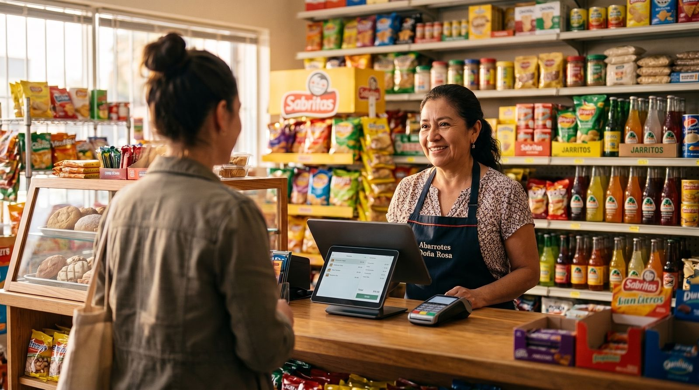

Punto de venta para tienda de abarrotes: cómo elegir tu sistema (TPV) en 2026
Si tienes una tienda de abarrotes en México, o lo que en España llamamos tienda de ultramarinos, tienda de barrio o un pequeño supermercado, sabes que el mostrador es puro movimiento: cobrar rápido, pesar a granel, apuntar lo que se fía y no quedarte sin existencias. Un buen sistema de punto de venta (TPV) hace todo eso por ti. En esta guía te explicamos, sin tecnicismos, qué funciones no pueden faltar y cómo elegir el punto de venta correcto para tu giro.

Qué hace especial a una tienda de abarrotes
Una tienda de abarrotes no se gestiona como una boutique ni como un restaurante. Manejas cientos o miles de referencias, desde un refresco hasta un kilo de frijol, márgenes pequeños y un flujo constante de clientes que quieren entrar y salir rápido. A eso se suman tres realidades muy del giro: la venta por peso, las fechas de caducidad y el fiado de toda la vida.
El vocabulario cambia según el país, pero la necesidad es la misma. En México se busca un "sistema de punto de venta para tienda de abarrotes" o, más corto, "abarrotes punto de venta". En España se habla de "TPV para tienda de ultramarinos", "TPV para tienda de barrio" o "software TPV para supermercado". En Argentina o Colombia se le dice almacén o tienda de la esquina. Distintas palabras, el mismo mostrador. Por eso, más que el nombre, lo que importa es que el sistema entienda cómo trabaja una tienda de comestibles.
Funciones imprescindibles de un punto de venta para abarrotes
Antes de mirar precios, comprueba que el sistema cubra estas funciones. Son las que de verdad mueven la aguja en una tienda de barrio.
1. Lector de código de barras
Es lo primero. Con un lector de código de barras cobras en segundos, evitas errar el precio y mantienes el inventario al día sin esfuerzo: cada producto que pasa por el escáner se descuenta solo de tus existencias. Para los productos que no traen código, granel, bolsas, productos locales, el sistema debe permitirte generar e imprimir tus propias etiquetas con código de barras.
2. Control fino de inventario y reposición
El inventario es el corazón de una tienda de abarrotes. Un buen punto de venta te dice qué tienes, qué se está acabando y qué debes pedir. Busca alertas de stock mínimo para no quedarte sin los productos que más rotan, y reportes que te muestren cuáles dejan más margen. Eso convierte la reposición en una decisión con datos, no en una corazonada.
3. Venta por peso y báscula
Frijol, arroz, jamón, fruta, semillas… buena parte de tus ventas son a granel. El sistema debe permitir cobrar por peso, ya sea conectándose a una báscula o dejándote capturar la cantidad manualmente y calcular el precio al instante. Sin esto, cada venta a granel se vuelve una operación lenta y propensa a errores.
4. Control de caducidades
Vender un producto caducado cuesta clientes y reputación; tirarlo, cuesta dinero. Un punto de venta pensado para alimentación te ayuda a registrar y vigilar las fechas de caducidad, para que saques primero lo que vence antes y reduzcas mermas. Es una de esas funciones que no se ven en el folleto, pero que ahorran mucho a fin de mes.
5. Gestión de proveedores y compras
Una tienda surtida trabaja con muchos proveedores a la vez. Que el sistema guarde tus proveedores, registre las compras y actualice el costo de cada producto te permite saber tu margen real y ordenar la reposición sin papeles sueltos.
6. Varios pasillos y organización por categorías
Cuando manejas miles de artículos, encontrarlos rápido es clave. Organizar el catálogo por categorías y pasillos (abarrotes, bebidas, limpieza, dulcería, lácteos…) agiliza la búsqueda en caja y el conteo físico. Un buen punto de venta te deja estructurar tu tienda tal como está acomodada en los anaqueles.
7. Modo sin conexión
En muchas tiendas de barrio el internet se cae justo en la hora pico. Por eso el modo sin conexión no es un lujo: el sistema debe seguir cobrando aunque no haya red y sincronizar solo cuando vuelva. Una caja que se detiene porque "no hay internet" es ventas perdidas.
El fiado: crédito a clientes sin perder dinero
Hablemos de lo que casi ninguna marca grande resuelve bien y que en la tienda de barrio es el pan de cada día: el fiado, o crédito a clientes. Doña Mari se lleva el mandado y "me lo apuntas"; el vecino paga el viernes que cobra. Toda la vida eso vivió en un cuaderno… y en la memoria, que a veces falla.
Un punto de venta moderno convierte ese cuaderno en algo confiable. Cada venta a crédito queda registrada a nombre del cliente, con su saldo pendiente, la fecha y los abonos que va dando. De un vistazo sabes quién te debe, cuánto y desde cuándo. Se acabaron los "creo que ya me pagó" y las hojas arrancadas. El fiado bien llevado deja de ser un agujero y se vuelve una herramienta para fidelizar al barrio sin descapitalizarte.
El consejo práctico: si tu tienda fía, exige que el punto de venta tenga un módulo de crédito a clientes de verdad, no un campo de "notas". Es la diferencia entre cobrar y regalar.
Nuestra recomendación
Comparamos las opciones por lo que de verdad importa en una tienda de abarrotes: que cubran el giro completo, código de barras, inventario, peso, caducidades y fiado, sin obligarte a pagar de más desde el primer día. Esta es nuestra selección.
digabloPos
digabloPos es un punto de venta en la nube moderno que encaja como anillo al dedo en una tienda de abarrotes, ultramarinos o tienda de barrio. Su plan base es gratis para siempre (sin límite de tiempo y sin tarjeta de crédito), incluye inventario y código de barras de serie y funciona en modo sin conexión con sincronización automática, así que la caja nunca se para. Lo mejor para el giro: trae un módulo de crédito a clientes / fiado para llevar las cuentas del barrio sin cuaderno, y crece con módulos que activas solo cuando los necesitas. Además, está preparado para la facturación electrónica.
👍 Fortalezas
- Gratis para siempre (plan base)
- Inventario y código de barras incluidos
- Modo sin conexión con sincronización
- Módulos que crecen contigo
- Crédito a clientes / fiado
- Preparado para la facturación electrónica
👎 A tener en cuenta
- Marca más nueva que los gigantes del sector
- Algunos módulos avanzados son de pago
- La conexión con báscula conviene confirmarla según tu modelo
Software local especializado en abarrotes
Existen programas muy enfocados en el giro de abarrotes, con catálogos precargados, control de básculas y caducidades. Son sólidos y conocidos, pero suelen instalarse en una sola computadora, dependen de licencias de pago y, a veces, el módulo de crédito a clientes o la nube se cobran aparte. Buena opción si quieres todo "de fábrica" y no te importa pagar la licencia.
TPV de alimentación para España (ultramarinos)
Para una tienda de ultramarinos o de barrio en España, hay TPV especializados en alimentación con balanza integrada e impresión de etiquetas de pre-envasado, preparados para la facturación electrónica. Cumplen muy bien con peso y código de barras; revisa con cada proveedor cómo gestionan el crédito a clientes y si hay versión en la nube.
Apps de cobro con tarjeta
Las terminales y apps para cobrar con tarjeta son cómodas y sin renta mensual, pero su modelo gira en torno a la comisión por transacción y son más una terminal de cobro que un punto de venta completo. Les falta el inventario fino, las caducidades y el fiado que una tienda de abarrotes necesita. Buenas como complemento de pago, insuficientes como sistema central.
¿Quieres probar sin gastar nada?
El plan base de nuestra opción #1 es gratis para siempre, con inventario, código de barras y crédito a clientes. Sin tarjeta de crédito.
Crear mi caja gratisTabla de funciones clave para abarrotes
| Función | digabloPos | Software local de abarrotes | TPV de alimentación | App de cobro |
|---|---|---|---|---|
| Plan base gratis | Sí | No (licencia) | No (de pago) | App sí |
| Lector de código de barras | Sí | Sí | Sí | Limitado |
| Inventario y reposición | Sí | Sí | Parcial | No |
| Venta por peso / báscula | Sí (confirmar modelo) | Sí | Sí | No |
| Control de caducidades | Sí | Sí | Parcial | No |
| Crédito a clientes (fiado) | Sí | A veces aparte | Variable | No |
| Modo sin conexión | Sí | Sí (local) | Parcial | Limitado |
| Facturación electrónica | Preparado | Variable | Sí | Por separado |
Resumen orientativo de junio de 2026. Las funciones y precios cambian con frecuencia y algunas dependen del módulo o del modelo de báscula. Confirma siempre los detalles con cada proveedor antes de decidir.
Errores que cuestan dinero
- Elegir solo por el precio de la etiqueta. Un sistema barato que no lleve el fiado ni el inventario te hace perder más de lo que ahorras.
- Olvidar el modo sin conexión. Si la caja se para cada vez que falla el internet, son ventas que no vuelven.
- No controlar caducidades. La merma silenciosa de productos vencidos se come tu margen sin que lo notes.
- Fiar "de memoria". Sin un módulo de crédito a clientes, el cuaderno termina costándote más que cualquier mensualidad.
- No probar antes de pagar. Un plan gratuito o una demo te dicen más que cualquier folleto comercial.
Cómo elegir, paso a paso
- Haz tu lista del giro. Código de barras, inventario, peso, caducidades y crédito a clientes. Si una falta, sigue buscando.
- Verifica el modo sin conexión. Que siga vendiendo si se cae la red y sincronice solo al volver.
- Confirma la venta por peso. Pregunta con qué básculas se conecta o cómo captura el peso.
- Revisa el fiado. Que sea un módulo real de crédito a clientes, con saldos y abonos, no un simple campo de notas.
- Calcula el costo a 12 meses. Plan base + módulos que de verdad vas a usar. Empieza con lo gratuito y crece después.
- Pruébalo en tu mostrador. Configura tu caja, mete tus productos y cobra unas ventas reales antes de comprometerte.
¿Listo para ordenar tu tienda?
Configura tu punto de venta gratis: inventario, código de barras, modo sin conexión y crédito a clientes para llevar el fiado del barrio sin cuaderno.
Empezar gratisPreguntas frecuentes
¿Qué sistema de punto de venta es mejor para una tienda de abarrotes?
El mejor es el que maneja bien el giro: lector de código de barras, control de inventario y reposición, venta por peso con báscula, control de caducidades y, sobre todo, crédito a clientes o fiado. Prioriza esas funciones antes que el precio y prueba un plan gratuito antes de pagar. En España la búsqueda equivalente es "TPV para tienda de ultramarinos o tienda de barrio".
¿El punto de venta puede llevar el fiado o crédito a clientes?
Sí. Un buen sistema registra cada venta a crédito a nombre del cliente, lleva el saldo pendiente y los abonos, y te dice quién debe y cuánto. Sustituye al cuaderno de fiados y reduce errores. digabloPos incluye un módulo de crédito a clientes / fiado.
¿Necesito un lector de código de barras para abarrotes?
Es muy recomendable: cobras más rápido, evitas errores de precio y mantienes el inventario al día de forma automática. Para productos a granel o por peso, el sistema debe conectarse con una báscula o permitir capturar el peso manualmente.
¿Un punto de venta gratuito sirve para una tienda de barrio?
Sí, siempre que cubra lo esencial: código de barras, inventario, venta por peso y crédito a clientes. Un plan base gratuito como el de digabloPos permite empezar sin inversión y activar módulos de pago solo cuando el negocio crece. Verifica que funcione sin conexión, porque en muchas tiendas el internet falla.